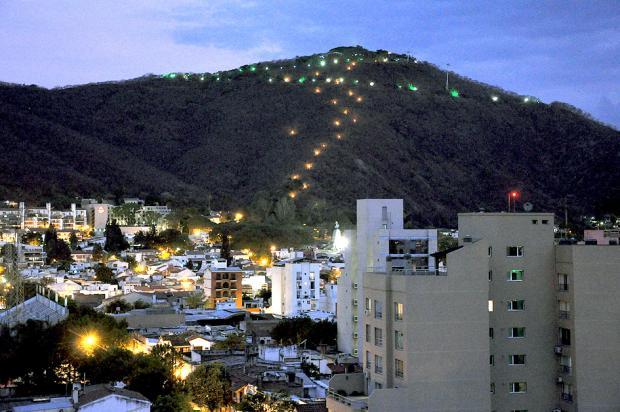
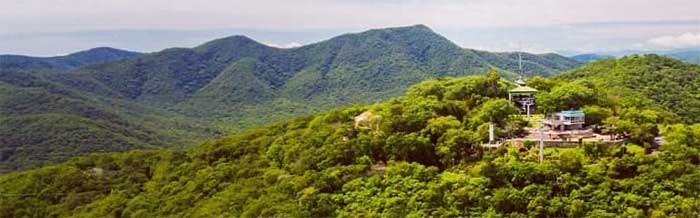

CERRO SAN BERNARDO

EL cerro san Bernardo, es una reserva Natural municipal que se eleva a una altura de 1454 mts sobre el nivel del mar.
Es uno de los puntos naturales que reune la mayor cantidad de biodiversidad es la ciudad. Que los Salteños conocemos como "Salta la linda"
Su Arbolidas estan Compuesta, por diversas especies autoctonas de la region. Su gran ruqueza de avefauna, es ideal para el avistaje de aves, que pueden aparecer a lo largo de los 1070 escalones que componen su esencia hasta la cima.
El cerro san Bernardo se levanta junto a la ciudad de Salta y es un paseo para muchos Salteños y turistas, lleva el nombre del patron de la ciudad de Salta y es un enblema de la ciudad.
Como llegar al Cerro San Bernardo
Para acceder a la cima del cerro hay tres posibilidades:
Para acceder a la cima del cerro hay tres posibilidades:
En auto: existe una ruta pavimentada que llega hasta la cima donde hay un estacionamiento no siempre suficiente para todos los autos que llegan (en especial los fines de semana). Esta opción permite llegar al cerro en remís o taxi.
Sendero peatonal: un camino bien marcado y con escalones permite acceder hasta la parte superior del cerro. El camino peatonal parte desde atrás del Monumento a Güemes (a 15 cuadras de la Plaza 9 de Julio).
Teleférico: desde el Parque San Martín comienza el recorrido de un moderno teleférico que llega hasta la cumbre del cerro.
Información
El Cerro San Bernardo esta cubierto por Vegetacion nativa donde se destacan los lapachos, molles, y tipas. En la cumbre del cerro hay diferentes miradores hacia la ciudad y valles de lerma, una cascada artificial, un pequeño ortario, la imagen del santo, bancos para descansar, baños publicos y venta de artesania, bebidas y golosinas.
La supeficie de la reserva natural es de aproximadamente 100h.,Situandoce al este de la ciudad, a 1458M sobre el nivel de la ciudad.
Se trata de un espacio natural con flora y fauna autoctomas, como quebranchos, talas, ceibos, algarrobas, cebiles, entre los parametros y animales como corsuelos, chanchos, rocillos, pajaros carpinteros, picaflor, vivoras cascabel e iguana obera.
La rocas de origen mario que conformaron el cerro y la presencia de fociles dan muestra que, hace 400 millones de años, este etaba cubierto por un mar de agua poco profundo, que se retiro por los movimientos sismicos que dieron origen al cerro, como parte de los serranias de majutara.
El cerro San Bernardo fue, en la historia de salta, parte activa de su vida, inpirador de pociones, polmas y coloridas acnedotas de folkore popular.
Horarios para visitar el Cerro San Bernardo
El horario para acceder al cerro es durante las 24 horas. El horario de los locales comerciales y tiendas de recuerdos y la confitería es hasta el anochecer. El teleférico funciona de 9 a 18:30hs.
